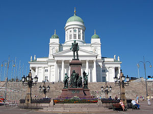
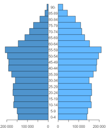

Istorija

Najstariji tragovi o ljudskom postojanju u Finskoj datiraju od 8000. p. n. e. Ovi primitivni lovci i
sakupljači su verovatno stigli sa istoka. Proizvodnja lonaca karakteriše drugi tip kulture ljudi iz
kamenog doba poznate kao ukrasna keramika. Uspeh Battle-Ax kulture (1800—1600. p. n. e.) možda je
donesen
u Finsku od indoevropskih ljudi iz južnijih baltičkih regiona. Ovi ljudi su bili uspešni moreplovci
i uveli
zemljoradnju. Udruživanja Battle-Ax ljudi sa prethodnim stanovništvom dovelo je do nove klukainen
kulture.
Bronzano doba počelo je u Finskoj 1300. p. n. e..
Tokom prvog perioda predhrišćanske ere i narednih vekova ljudi su govorili jedan od finskougarskih
jezika.
Prošlost Finske je vezana za dug period dominacije germanskih naroda (prvenstveno Šveđana), a sa
druge strane
slovenskih naroda (Rusa). Etnogenetski ni sa Šveđanima, ni sa Rusima nemaju ništa zajedničko.
Najbliži etnički
srodnici su im Estonci i Mađari u Panonskoj niziji. Finci su narod ugro-finskog porekla. Šveđani su
u XI veku
pokorili i politički sebi prisvojili celu Finsku. Ona je bila njihov posed sve do 1809. godine. Dva
plemena
Finci i Hemejci primili su rimokatoličku veru, a Karelijci pravoslavnu od Rusa.
Posle 1809. godine Finska potpada pod rusku vlast sve do 1917. godine. Po proglašenju Lenjinovih
socijalističkih
naroda o samoopredeljenju naroda Rusije, Finci su iskoristili momenat i postali samostalna država.
Finska je
tokom Drugog svetskog rata poražena od tadašnjeg Sovjetskog Saveza i morala mu je ustupiti deo
Karelije sa
gradom Viborgom, celu obalu Ladoškog jezera i zaliv Petsamo na obali Barencovog mora, te je tako
Finska svedena
na današnji prostor. Konačan mirovni sporazum sa Rusima potpisan je 1947. godine. Naknada štete u
obliku roba
široke potrošnje je isplaćena u potpunosti 1952. i tri godine kasnije poluostrvo Porkala je vraćeno
Finskoj.
Novi odnosi sa Sovjetskim Savezom su doveli do legalizacije komunističke partije, sporazum o
prijateljstvu,
saradnji i obostranoj pomoći (nevažeći od januara 1992).
Od 1995. godine Finska je članica Evropske unije.
Stanovništvo

Finci čine više od 90% populacije, a potomci Šveđana oko 5,5 %. Na istoku zemlje živi oko 2.500
Saamija.
Ostale etničke grupe čine manje od 1% stanovništva. Iako su Šveđani u manjini, oni imaju svoje
političke
partije, škole i druge institucije.
Finski i švedski su zvanični jezici. Više od 90% stanovništva govori finski dok oko 5,5 % ljudi,
uglavnom skoncentrisanih u obalskim krajevima, govore švedski. Saami govore Samijske jezike,
koji pripadaju ugro-finskim jezicima.
Evangelistička Luteranska crkva je glavna i njoj pripada 86% populacije. Sloboda vjeroispovijesti je
zagarantovana. Pravoslavna crkva, iako nacionalna, po broju vjernika opada od Drugog svjetskog
rata.
Stanovništvo Finske broji 5.183.545 osoba po popisu iz 2002. Gustina stanovništva je 15 stanovnika
na km²,
što Finsku čini jednom od najređe naseljenih zemalja u Evropi. Više od 2/3 stanovnika je smešteno u
južnim
krajevima. U gradovima živi 67% stanovnika. Helsinki ima oko 551.123 stanovnika (2000. g.). To je
intelektualni, proizvodni i trgovinski centar. Sledeća tri najveća grada su Espo 209.667, Tampere
193.174 i Turku 172.107, koji su takođe industrijski centri.